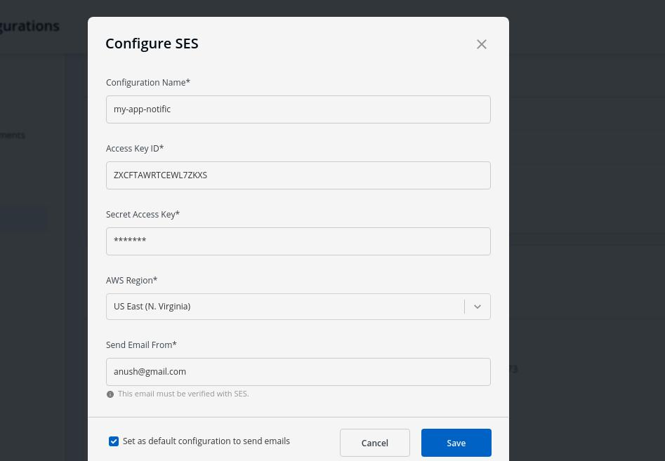
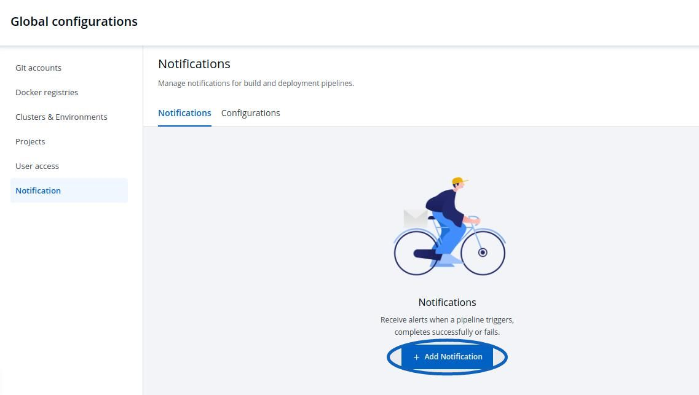

Notification
This feature helps you manage the notifications for your build and deployment pipelines. You can recieve the notifications on Slack or via e-mail.
Click on Global Configurations-> Notification
Manage Configuration
Click on Configurations to manage SES Configurations or Slack Configurations

Manage SES Configurations
You can manage the SES configuration to recieve e-mails by entering the valid credentials. Make sure your e-mail is verified by SES.

Click on Add and configure SES.

| Key | Description |
|---|---|
Configuation Name |
Name of the SES Configuration |
Access Key ID |
Valid AWS Access Key ID |
Secret Access Key |
Valid AWS Secret Access Key |
AWS Region |
Select the AWS Region from the drop-down menu |
E-mail |
Enter the SES verified e-mail id on which you wish to recieve e-mail notifications |
Manage Slack Configurations
You can manage the Slack configurations to recieve notifications on your preferred Slack channel.

Click on Add to add new Slack Channel.

| Key | Description |
|---|---|
Slack Channel |
Name of the Slack channel on which you wish to recieve notifications. |
Webhook URL |
Enter the valid Webhook URL link |
Project |
Select the project name to control user access |
Manage Notifications
Click on Add New to recieve new notification.

Manage Slack Notifications

Send To
First, enter the name of your Slack Channel if you have already configured Slack Channel. If you have not yet configured the Slack Channel, Click on Configure Slack Channel
Select Pipelines
-
Then, to fetch pipelines of an application, project and environment.
-
Choose a filter type(
environment,projectorapplication) -
Then you will see a list of pipelines, you can select any number of pipelines. For each pipeline there are 3 types of events
Trigger,SuccessandFailure. Click on the check boxes for the events, you wish to recieve notifications.
-

Click on Save after you have configured Slack notifications.
Manage SES Notifications
Send To
- First, enter the e-mail address/addresses on which you want to send e-mail notifications. Make sure e-mail id’s are SES Verified.
If you have not yet configured SES, Click on Configure SES
Select Pipelines
-
Then, to fetch pipelines of an application, project and environment.
-
Choose a filter type(environment, project or application)
-
Then you will see a list of pipelines, you can select any number of pipelines. For each pipeline there are 3 types of events Trigger, Success and Failure. Click on the check boxes for the events, you wish to recieve notifications.
-

Click on Save after you have configured the e-mail notification.